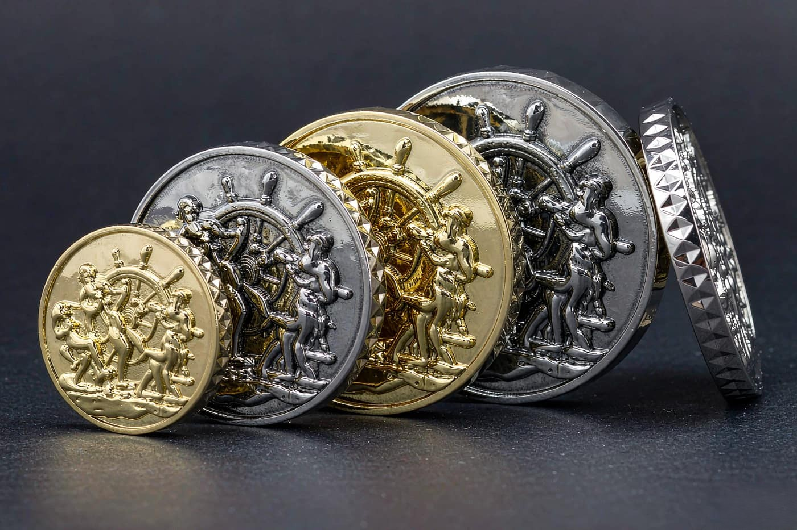

A challenge coin is specified by two dimensions, not one. Diameter decides how much artwork the face can hold. Thickness decides how much metal it contains, and therefore how heavy it feels, how much it costs to produce, and how the edge behaves.
Buyers usually fixate on diameter because it is the number they can picture. Thickness is what actually changes the character of the coin, and getting it wrong produces a piece that feels like a badge rather than a coin.

The four diameters we produce most
| Diameter | Typical thickness | Typical use | Artwork it carries |
|---|---|---|---|
| 44 mm (1.75 in) | 2.0 mm to 3.0 mm | Standard challenge coins and tokens | A clear emblem with a single line of text |
| 50 mm (1.97 in) | 3.0 mm to 4.0 mm | Service coins and recognition awards | Two lines of text around a central design |
| 57 mm (2.25 in) | 3.0 mm to 4.5 mm | Commemorative and anniversary coins | Full artwork with lettering on both faces |
| 65 mm to 80 mm (2.56 in to 3.15 in) | 4.0 mm to 6.0 mm | Display coins, display cases, premium programmes | Illustrated scenes and fine engraved detail |
Above 80 mm we move from struck coins to cast pieces, because the weight and the relief depth a human can hold comfortably changes at that point. Those sizes are produced on the die casting line and behave differently under the hand.
Why thickness changes everything
Thickness is the dimension buyers under-specify. It is not a finishing detail, it changes the object.
A 44 mm coin at 2 mm is light, thin and flexible at the rim. It reads as a token. A 44 mm coin at 4 mm has real weight, holds a deep relief and takes a proper milled or diamond-cut edge. The artwork can be the same. The object is completely different.
Three things follow from thickness.
- Relief depth. A thicker blank can carry deeper relief, which is what makes the light catch the design as the coin turns.
- Edge treatment. A diamond-cut or rope edge needs enough material to cut into. At 2 mm, an edge treatment is barely a texture. At 4 mm it is a defining feature of the coin.
- Weight and cost. Thickness is the dimension that moves the material cost most, and it also moves the freight weight, which matters more for coins than for pins, because a coin carries deliberately more metal for its size.
Relief depth and what it does to the face
Relief is the raised part of the design. On our coins the face carries relief of up to 3.0 mm, struck on hydraulic friction presses rated to 200 tonnes.
Deep relief looks better under directional light, because the shadow it casts defines the design. It is also harder to produce, because the metal has to flow further to fill the cavity, and fine details can distort if the design asks for both deep relief and fine lines in the same area.
This is where the CAD proof earns its place. A three-dimensional render shows exactly how the relief will read, and it is far easier to change a line depth on a proof than to change it after a mould has been cut.
Edge treatments, and why they matter
The edge is the cheapest thing to specify and the one that most changes whether a coin feels like a coin. We offer three.
- Plain milled edge. A clean straight cut. Functional, and the right choice for a coin that will be stacked or bagged in volume.
- Diamond-cut edge. A pattern of angled facets cut into the rim, which catches light as the coin turns. Needs 3 mm or more to read properly.
- Rope edge. A raised rope pattern running around the rim, the traditional look on currency-style coins. Also needs a thicker blank.
Two-sided or single-sided
Almost all coins we produce are struck on both faces, and this costs nothing extra because the press is already set up for it. A single-sided coin has a flat reverse, which is occasionally useful when the back needs to sit flat against something, or when the reverse is meant to carry a separate finish.
If one side carries a very shallow design and the other a deep one, the press setting is balanced to the deeper side. We will tell you if the two faces need separate passes.
Plating and finish on a coin
Coins are plated the same way as pins, from our twelve-finish range, with a copper strike under the plating and XRF testing on every rack to confirm it is lead-free.
Two treatments are worth calling out. A dual plating gives a polished gold rim with a satin nickel centre or the reverse, which reads as a deliberate two-tone design rather than a single finish. An antique finish recesses the design in a darker tone and leaves the high points bright, which is how most military and heritage coins are meant to look.
Whichever you choose, the sample is where the answer comes from, because the finish interacts with the relief in a way that a flat render does not show.
Choosing a size for your programme
A practical way to think about it.
- Give-away or token for a broad audience: 44 mm at 2.5 mm. Light, low material cost, still reads clearly.
- Service or recognition award that will be kept: 50 to 57 mm at 3.5 to 4 mm. This is the weight people notice and remember.
- Commemorative piece for an event or anniversary: 57 mm at 4 mm with a diamond-cut edge and dual plating.
- Display coin for a case or a presentation: 65 mm and above, thicker still, and cast rather than struck when relief needs to be substantial.
Two things to remember. The diameter is a design decision, but the thickness is also a budget decision, and it is the one with more leverage. And whatever you choose, the sample tells you far more than any specification sheet.